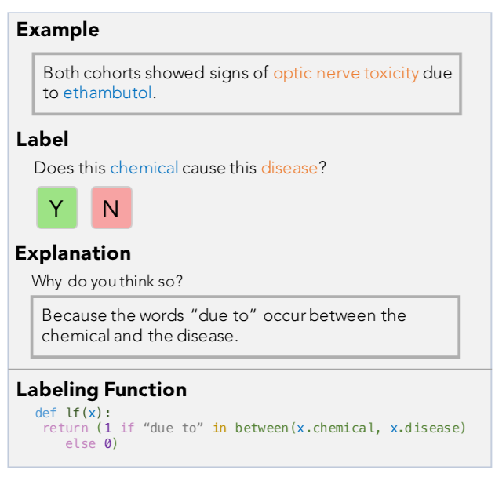
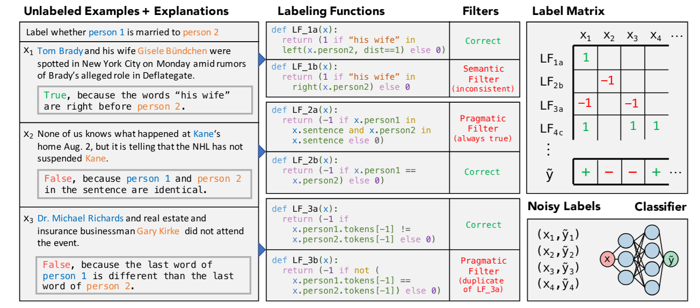
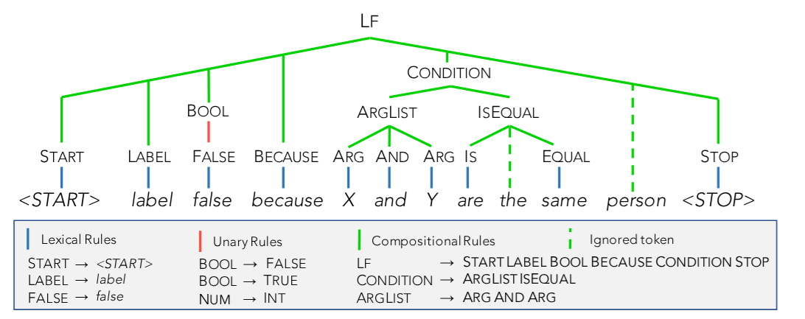

Training Classifiers with Natural Language Explanations
Paper Review
BabbleLabble, Feature Engineering, Function Learning, Explanation-Based Learning, Semantic Parsing, Aggregation

In (Hancock et al. 2018) the authors consider how to learn labeling functions from natural language explanations. Such explanations can come from a data labeler on Amazon mechnical Turk, a domain expert and perhaps from an LLM. Labeling function capture a heuristic for labeling data. The author ties it up with some work on data programming which lead to snorkel another data labeling tool. This paper isn’t about RL at all. It is interesting for a number if reasons.
The hook for me was its approach to aggregation. Since Scott E. Page pointed out the challenges of aggregation in his book The Difference I have been considering how it manifests in many forms - particularly in language emergence.
The chart I saw for the presentation was extremely similar to another chart I had seen in a paper on emergent languages. It looked like this paper was solving an aggregation problem I had been considering in emergent languages. It turned out to be a coincidence. These are different problems, and they aggregation is for different things. And yet there still seems to be an underlying similarity.
- Another aspect of the paper is the approach to aggregating weak noisy classifier into a more powerful one. This aspect seems to also have merits for agents that are learning to discriminate together with learning a language. It is interesting that both Yoav Golderg and the Authors of this paper think that parsing accuracy is not that important since the parsers are good enough and their system is built to be robust to errors.
- It uses semantic parsers to convert natural language explanations into labeling functions. Back in 2019 Yoav Goldberg i suggested in that too often NLP devs use RegEx instead of a more robust approach based on syntax trees that can be constructed thanks to Spacy. I think semantic parsers are perhaps one step further where we take the parse tree and convert it to a program.
- Seems similar to the approach of I saw in Prodigy by spacey core developer Ines Montani and others.
- It implements Explanation-Based Learning from Cognitive AI (CS7637) course.

BabbleLabble is a framework for training classifiers in which annotators provide natural language explanations for labeling decisions. These explanations are parsed into labeling functions that generate noisy labels for unlabeled data. The framework consists of a semantic parser, filter bank, and label aggregator. Experiments on relation extraction tasks show that users can train classifiers 5-100× faster by providing explanations instead of just labels. The filter bank effectively removes incorrect labeling functions, and the label aggregator combines labels into probabilistic labels for training a discriminative model. The noisy labels provide weak supervision that promotes generalization.

Abstract
Training accurate classifiers requires many labels, but each label provides only limited information (one bit for binary classification). In this work, we propose BabbleLabble, a framework for training classifiers in which an annotator provides a natural language explanation for each labeling decision. A semantic parser converts these explanations into programmatic labeling functions that generate noisy labels for an arbitrary amount of unlabeled data, which is used to train a classifier. On three relation extraction tasks, we find that users are able to train classifiers with comparable F1 scores from 5-100× faster by providing explanations instead of just labels. Furthermore, given the inherent imperfection of labeling functions, we find that a simple rule-based semantic parser suffices. — (Hancock et al. 2018)
Outline


Introduction
- Describes the standard protocol for collecting labeled data for training classifiers.
- Highlights limitations of labeling: each label only provides a single bit of information.
- Mentions previous works’ approaches to improve information gain from examples.
- Presents
BabbleLabble, a framework where annotators provide natural language explanations for each labeling decision.
The BabbleLabble Framework
- Describes how
BabbleLabbleconverts explanations and unlabeled data into a noisy training set. - Presents the three main components of
BabbleLabble: semantic parser, filter bank, and label aggregator. - Mentions how explanations provide high-level information about patterns in the data.
- Notes that the semantic parser converts explanations into a set of logical forms representing labeling functions.
- Explains how the filter bank removes incorrect labeling functions based on semantic and pragmatic criteria.
- Describes how the label aggregator combines labels from the labeling functions into probabilistic labels for each example.
- Explains the benefits of training a discriminative model using the noisy labels instead of classifying directly with the label aggregator.
Explanations
- Discusses the format and content of user-provided explanations.
- Highlights that explanations should refer to specific aspects of the example.
Semantic Parser
- Describes the goal of the semantic parser: generate a set of candidate labeling functions (LFs).
- Presents the rule-based semantic parser used in
BabbleLabbleand its key features. - Discusses the parser’s grammar and the included predicates.
- Notes that the parser is domain-independent, allowing transferability to new tasks.
Filter Bank
- Explains the role of the filter bank: remove incorrect labeling functions without requiring ground truth labels.
- Discusses the two types of filters: semantic and pragmatic.
- Describes the purpose and operation of semantic and pragmatic filters.
- Highlights the effectiveness of the filter bank in removing incorrect labeling functions.
Label Aggregator
- Explains the function of the label aggregator: combine potentially conflicting labels from multiple labeling functions into a single probabilistic label.
- Discusses the limitations of a simple majority vote approach.
- Presents the data programming approach used in
BabbleLabble, which models the relationship between true labels and labeling function outputs as a factor graph.
Discriminative Model
- Discusses the advantages of using a discriminative model trained with noisy labels.
- Explains how a discriminative model can leverage features not explicitly mentioned in explanations.
- Notes that the noisy labels provide a form of weak supervision that promotes generalization.
Experimental Setup
- Describes the three relation extraction tasks used for evaluation: Spouse, Disease, and Protein.
- Presents details about each dataset: source, task description, and size.
- Discusses the experimental settings: text preprocessing, semantic parser implementation, label aggregator, and discriminative model.
- Mentions hyperparameter tuning and evaluation metrics.
Experimental Results
- Presents the F1 scores achieved by
BabbleLabblecompared to traditional supervision. - Highlights the rate of improvement in F1 score with the number of user inputs.
- Discusses the effectiveness of the filter bank in removing incorrect labeling functions.
- Presents an analysis of the utility of incorrectly parsed labeling functions.
- Compares using labeling functions as functions versus features.
- Discusses the impact of unlabeled data on performance.
The Paper Annotated
References
Footnotes
TODO: make a cheat-sheet on this topic!?↩︎